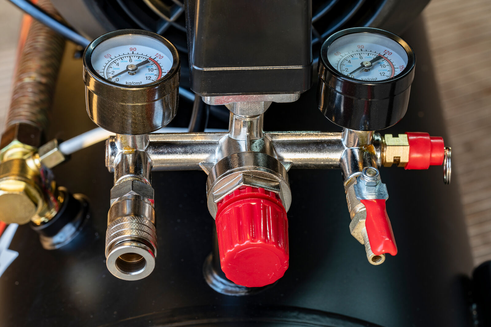

Home / Blog / Compressed Air for Retread Shops
EQUIPMENT GUIDEBuffers, builders, envelope stations and curing chambers all run on shop air, and the chamber fill is usually the biggest demand. How to size a retread shop's compressed air system, why leaks and excess pressure cost money, and which Ontario incentives cover the upgrades.
Published November 27, 2026 · Good Hope Retreaders

Compressed air rarely gets much attention when a fleet plans a retread line. The budget goes to the buffer, the builder and the curing chamber. But most of those machines run on shop air. On our own equipment, the buffing machine, tire builder and envelope sealing station are each specified for 7–8 bar (roughly 100–115 psi) supply. The enveloping machine is pneumatic, and the electric curing chamber locks its door with a pneumatic lock ring.
When the air system is undersized, leaky or set up badly, it shows up as slow cycles, tools that bog down, and electricity bills that are higher than they should be. This guide covers where the air goes in a retread shop, what the public energy-efficiency data says about leaks and pressure, how to approach sizing, and which Ontario incentives apply.
In a retread shop that cures in a pressurized chamber, filling the chamber is usually the largest single demand on the air system. In an Atlas Copco case study on Black's Tire's retread plant, the plant's operations manager says plainly that filling the curing tank uses most of the plant's air, and that pneumatic tools and rubber application use much less. The same case study says the plant's compressors became a problem as retread production grew, and the plant replaced them with a variable speed drive compressor.
Hand tools need far less air. Chicago Pneumatic's CP873C-HD heavy-duty tire buffer, for example, lists air consumption of 4 cfm at free speed and a maximum working pressure of 90 psi. Several of those running at once still add up, but they are small next to a chamber fill.
That difference in scale causes a specific problem, and it's well enough known in retreading that someone patented a fix for it. U.S. Patent 6,145,535, Air priority valve for a compressed air supply system, describes a retread plant where the autoclave and all the air-driven equipment share one compressed air system. Because the autoclave's demand comes all at once, it can be more than the compressor and storage tank can supply, and it drains pressure from the buffers and builders. The patented solution is a valve at the autoclave inlet that closes when supply pressure falls below a set limit and reopens once pressure recovers.
You don't need that particular valve to learn the lesson. Size the air system for the chamber fill, not for the average. Then decide how you'll protect the rest of the shop while the chamber fills, whether that's with storage, scheduling or a priority control.
There's no published standard that tells you how big a retread shop's compressor should be. Shops differ too much in chamber size, cure schedule and tool count. The sound approach is to build the number up from your own equipment:
A compressed air supplier can turn that list into a specification. Bringing them the equipment data and cure schedule up front is the difference between a system sized for your shop and one sized by guesswork.
The U.S. Department of Energy's compressed air tip sheet on leaks says leaks are a significant source of wasted energy and often waste 20 to 30% of a compressor's output. Natural Resources Canada describes the same 20 to 30% range as typical at industrial plants, and both agencies say a proactive leak detection and repair program can bring leakage below 10% of output.
A retread shop has plenty of places for air to escape: quick couplers that are connected and disconnected all day at buffing stations, hoses dragged across the floor, worn regulators, fittings on envelope and chamber equipment, and drains left open. Leaks run whenever the compressor is running, including at night and on weekends if the system stays pressurized.
A simple routine covers most of it: walk the system with the shop quiet and listen, check couplers and hoses on a schedule, shut off air to areas that aren't in use, and fix leaks as part of planned maintenance rather than waiting for a tool to fail. This is a different job from envelope vacuum checks, which protect bond quality rather than energy use. Our curing envelope guide covers those.
When a tool at the far end of the shop runs weak, the quick fix is to turn up the compressor. That fix costs money every hour the compressor runs. Natural Resources Canada and the Bonneville Power Administration both give the same rule of thumb for systems around 100 psig: every 2 psi increase in discharge pressure raises energy use by about 1% at full output.
The better approach is to set the system to what the highest-pressure equipment actually needs at the point of use and then deal with pressure drop where it happens: undersized piping, long hose runs, clogged filters or a leaking coupler. If one machine needs more pressure than everything else, it's often cheaper to deal with that machine on its own than to raise the pressure for the whole shop.
Compressing air concentrates the water vapour in it, and that water condenses as the air cools in the receiver and piping. If it isn't drained and dried, it ends up in tools and blow guns, and it can end up on the work. In retreading that matters, because a contaminated buffed surface is one of the classic causes of bond problems. Our failure analysis guide lists shop air that carries oil or moisture as one of the things to check when a retread comes back with bond line porosity.
Practical steps: drain the receiver and drip legs, use automatic drains, fit filters and a dryer suited to how the air is used, and never use a blow gun on a buffed casing unless you know the air is clean and dry. Our guide to wet casings and pre-drying covers the casing side of the moisture problem, and buffing and rasping for bond quality covers why a clean buffed surface matters.
Ontario businesses can get incentives for compressed air efficiency through Save on Energy, the IESO-run conservation program. The Retrofit Program's prescriptive stream lists compressed air measures including variable speed drive compressors, variable displacement compressors, primary air receiver tanks and zero-loss condensate drains, with incentives of up to 50% of eligible project costs. Projects that don't fit the prescriptive list can go through the custom stream, which pays on calculated energy and peak-demand savings.
Two cautions. First, the amounts change: Save on Energy adjusted a set of prescriptive incentives effective June 30, 2026, and its program pages flag further updates. Check the current measure list, worksheets and eligibility rules before you buy, not after. Second, your local utility may run its own offers, so ask them too. Since compressed air is mostly an electricity cost, it's also worth reading our guide to Ontario rate plans and cure scheduling. The same timing choices affect when your compressor runs hardest.
An air receiver is a pressure vessel. In Ontario, pressure vessels fall under the boilers and pressure vessels rules that TSSA administers. If you're buying a receiver, especially a used one, confirm with the supplier and TSSA what registration it needs (including its Canadian Registration Number) before it goes into service. Our guide to buying used retread equipment in Ontario explains how TSSA handles used vessels.
Good Hope is a manufacturer-direct supplier of retreading machinery, consumables, components and repair tools. We publish the air requirements for our equipment so you can plan the supply before installation, and we quote one transparent, all-in Canadian price with local Ontario service. Compressors aren't part of our catalogue, but we'll give your air system supplier the equipment numbers they need.
Tell us which machines you're running or planning and your weekly volume. We'll send the air pressure requirements for each piece of equipment along with one transparent, all-in Canadian price, with local Ontario service included.
Talk to us about your line →Send us your requirements and we'll get back to you within 24 hours with pricing and lead times — no obligation.